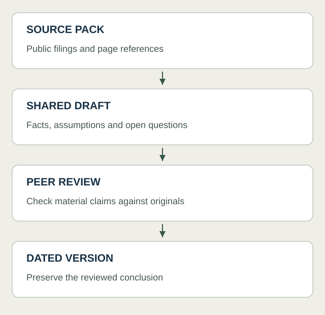

Why this caught my attention
I’m studying BBA with a focus on finance, and I’m interested in what happens between finding financial data and actually using it. There are plenty of tools that can produce a summary. I’m more curious about how to turn that summary into something I can build on tomorrow. That is the part of Space that caught my attention.
How I would use it
OpenAI describes Pages as editable documents that people can share and work on with their own ChatGPT agents. For me, the appeal would be having somewhere to develop a company analysis over time: the source material, a few useful tables, and the questions I have not answered yet.
My interest in n8n makes me think about the steps around that page. I would like to build a process that notices a new company report, gathers the relevant material and prepares a consistent set of inputs. Then I could spend more time looking at what changed in revenue, margins or cash flow. That is a workflow I would like to explore; I have not established a direct n8n-to-Space connection.
I would start with one company and a few reporting periods. Keeping the numbers next to my interpretation would make it easier to revisit an assumption when new information arrives. I could also keep a short note explaining why I changed my view, rather than just replacing the old paragraph.
The catch is that another workspace can become another place to maintain. I would only keep using it if it makes the analysis easier to continue. Access is still rolling out, so I would check what is available before building a routine around it.
Where I want to take this
This is the direction I want to explore: financial analysis supported by a process I can understand and improve. I want to learn how to move from a source document to useful data, and from that data to a clear explanation.
My first test would be a simple company research page that I update after the next report. I would look at how much preparation I can reuse and whether the important numbers remain easy to trace. If that works, I would gradually automate more of the preparation. The point, for me, would be having more attention left for the financial questions that made me open the report in the first place.
A workflow I would like to explore

Sources
- TechCrunch: workplace launch coverage — TechCrunch · Published 2026-09-29; accessed 2026-09-30
- OpenAI: sharing, data and controls — OpenAI · Published Publication date not disclosed; accessed 2026-09-30
- OpenAI: getting started with Space — OpenAI · Published Publication date not disclosed; accessed 2026-09-30